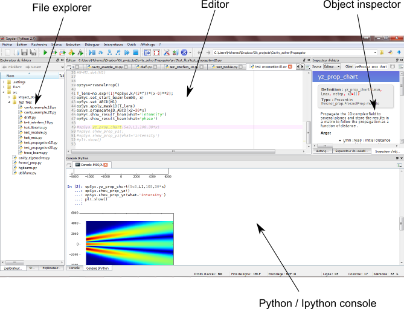
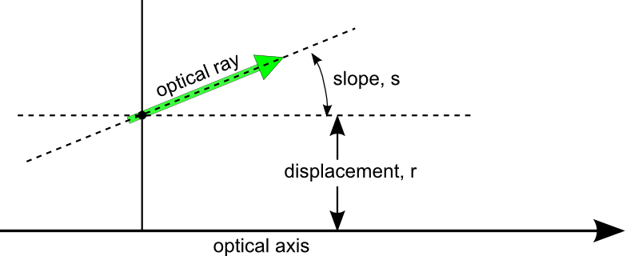
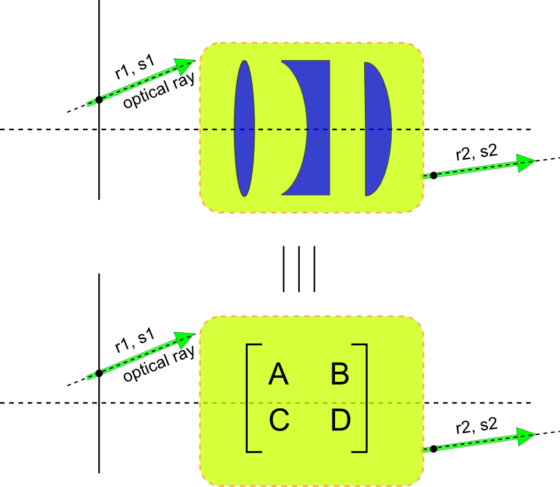
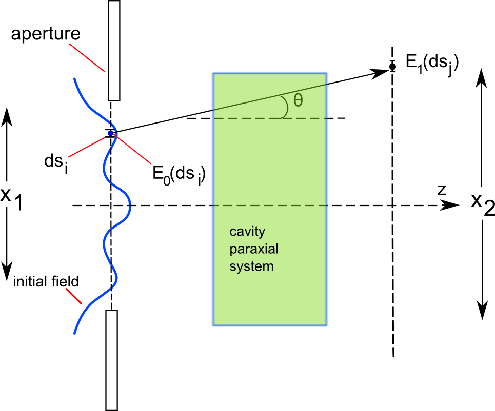

Before starting¶
Opencavity can be downloaded from releases page . But it requires some scientific and visualization python packages to work.
In the first part of this page we present briefly how to install python and the needed dependencies (numpy, scipy and matplotlib).
In the second part we see some basics of optical cavities and their eigenmodes, don’t worry it is not a course, just what one needs to learn and start using OpenCavity rapidly and efficiently. Let’s begin!
New to python?¶
The easiest way to install python2.7 on windows and all the needed dependencies is to install one of the scientific Python bundles such as anaconda or pythonxy which come with the most popular python packages for scientific and engineering (numerical computations, data analysis and data visualization...). Both python distributions come with spyder a (Matlab-like) interactive development editor for python. This is the simplest way to have a working environment out of the box, otherwise you will have to install every single package separately:
On Linux users can install all modules quickly using the command line:
#sudo apt-get install python-numpy python-scipy python-matplotlib ipython python-spyderlib
Once all packages installed, you can install OpenCavity from releases page and launch spyder, see screen shot below.
The important parts pointed out in the figure above are:
- Editor : a text editor for python (writing and executing python scripts)
- Python console: for interactively (in-line) writing and executing python commands.
- Object instructor: gives informations about variables in the workspace (like the workspace browser in Matlab)
When we give commands in the tutorials you can directly copy-past them in the console, Or in the editor to save and execute the commands. For these reasons at the end of each tutorial we give the cleaned code to copy the code directly without having to remove the commands number every time. If you have Ipython installed on your machine you can use it in spyder by choosing ipython interpreter in the interpreters menu. We will use an Ipython interpreter in the following tutorials, but using the default python interpreter
will also work.
To check that everything works fine, you can try to import the opencavity package and launch an off-line version of this tutorials by typing
.. ipython:
In [1]: import opencavity; #importing the opencavity module
In [2]: opencavity.help.launch(); #Launch off-line documentation in the browser
To get more information about using spyder with ipython there are many tutorials on the web, I personally prefer this one .
Gaussian optics and paraxial ray matrices¶
Gaussian optics, transfer matrices and ABCD law are essential tools for optical cavity design and analysis. These basics are covered in almost all optics textbooks and there are bunch of tutorials on the web, for this reason we think that talking about these basics once again will not be of great use. So if you are not familiar with these principles there is an excellent on-line tutorial on open resonator and Gaussian optics here that I highly recommend. Nevertheless, we give a brief insight of paraxial ray matrices as we will using it all through the tutorials to define optical cavities.
- ABCD ray matrices
ABCD matrices are widely used to propagate optical rays through paraxial systems, for this the optical ray is defined by a slope s and a displacement r .
{kind=link}
When the ray propagates through paraxial optical element (lenses, curved mirrors ,interfaces and ducts ) ABCD matrices are used to transform the slope and the displacement of this ray.
{kind=link}
For paraxial systems the output displacement and slope r2, s2 can always be written as a function of r1,`s1` in matrix form as
This method is very useful and allows to cascade optical elements merely by doing dot product of tier respective matrices.
Theoretical overview of modes calculation¶
Open cavity uses matrix method (different from ABCD matrices) with Fresnel kernel formulation to model the propagation inside the optical cavity. At the first stage the ABCD matrix of the optical system is written, then the Fresnel propagation integral through this system is calculated [Kogelnik1966], one can take this integral expression and propagate some initial field back and forth to see if the system sustains it, this is known as the Fox-Li method after the two researchers that first published it [Fox-Li1961]. The initial mode can be merely a plane wave or noise that can be seen as a sum of several modes or components (harmonics), then after propagating this initial field back and forth inside the cavity its components experience different diffraction losses and the fundamental mode of the cavity (if exists) will be the dominant one in the sum, because by definition it is the well confined one, having the weakest diffraction losses. More rigorous explanations and mathematically driven expressions can be found in the excellent textbook [siegman1986] in Chap 14.2 Mathematics of optical resonator modes and in this paper by the same author [Siegman1970].
The Fox-Li iterative method is very useful method but can be used to find the fundamental mode only, or more precisely the dominant one, especially when we already have a quite good guess of it. However, sometimes when the initial field is a plane wave or noise, the calculations usually need a large number of iterations and converge hardly. For this reason, a more powerful method has been developed which is the matrix method. to understand how it works let’s resume from writing the round-trip Fresnel propagation integral in a ABCD system, but now rather than propagating a given initial field back and forth, we will write the propagation operation as a matrix product, let’s take a moment to think about it:
{kind=link}
we propagate a given wave from a starting plane x1 to a second one x2 (the latter can be considered as a detector), to calculate the amplitude and the phase of the propagated field at each point on the detector \(E_1(ds_j)\), we have to calculate the Fresnel integral over the whole starting plane \(E_0(ds_i) , i=1,2,3..\). The equation shown above is the propagation integral through the cavity, and K(x1,x2) is a linear propagation operator called the Kernel. Supposing that the studied cavity system has some fields that propagate without experiencing a change in their E-file distribution but only some losses, these self-reproducing field are the modes we seek, this can be written as follows:
where \(\gamma_{nm}\) is the eigenvalue of the n’th mode.
Now sticking with the same point on the detector, and using what is called the Legendre-Gauss quadrature scheme to transform the integral to a weighed sum at particular points \(\chi_i\) of the function known a the abscissas (see Wikipedia article), as follows \(\int_{-1}^{1}f(x)=\sum_{i=1}^{\infty} \omega_i f(\chi_i)\) this transforms the propagation integral to a weighted sum, for a given point \(x2_j\) one obtains:
we end up with a weighted sum of all points of the initial field (vector ) to obtain one point of the second field (vector), does this remind you something? well it will be more easy if we write it in a little different form:
It is the dot product of two vectors, or more generally a matrix with vector when the second vector contain more than one line which is actually the case here because we want to calculate the field on all points of the detector, the matrix M is the Kernel-matrix. It is easier now to see what are we talking about when we say a matrix-eigenvalues problem. To obtain the modes and their propagation losses inside the cavity, we have merely to calculate the eigenvalues and eigenvectors of the Kernel-matrix. We took a 1D example to explain the method used in OpenCavity, this method can be also used on 2D systems thanks to a matrix transforming operations presented in this paper [Morissy2012].
As explained earlier this method allows to design general cavity systems using ABCD matrix method, but sometimes we need optical elements that cannot be defined using ABCD matrices, for this reason we added in open cavity a possibility to use any phase or amplitude function, as long as its distribution expression is known as we show in the tutorials.
It is important to note, that as we are using Fresnel Kernel formulation, one have to keep in mind that it works for paraxial systems which means systems with small numerical aperture, or put another way to calculate propagation of waves with small angle (<30 deg) from the propagation axis. For more details see [siegman1986] in Chap 16.1 The paraxial wave equation and next chapter.
Bibliography
| [Kogelnik1966] | Kogelnik, H. & Li, T. Laser beams and resonators. Appl. Opt. 5, 1550–1567 (1966). |
| [Fox-Li1961] | FOX, A. G., & Li, T. (1961). Resonant Modes in a MaserInterferometer. Bell Sys Tech. J, 40, 453–488. |
| [siegman1986] | (1, 2)
|
| [Siegman1970] | Seigman, A. E., & Miller, H. Y. (1970). Unstable optical resonator loss calculations using the prony method. Applied Optics, 9(12), 2729–36. |
| [Morissy2012] | Morrissey, F. X., & Chou, H. P. (2011). Mode calculations in asymmetrically aberrated laser resonators using the Huygens-Fresnel kernel formulation. Optics Express, 19(20), 19702–7. |